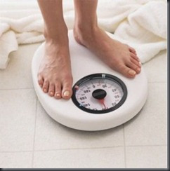

SIP for your health

SIP (Systematic Investment Plan) seems to be the rage nowadays where everyone worth his financial acumen rants about the merits of SIP. That takes care of the dhan (wealth) part, what about the tan (physical health) part? In fact, this requires a more disciplined SIP and has more long term and beneficial effects. Sounds logical? Here we go…
How does a health SIP compare with an Equity SIP
- Both have to be done regularly at a pre-determined frequency. Experts advise a brief vigorous exercise routine of at least half hour for at least 3 days a week.
- There is an initial entry load of pain and discomfort depending upon one’s physical health at the entry point. SEBI has banned entry loads, this cannot be banned!
- The SIP amount (efforts spent on exercise and diet) can be started on a very low key basis and gradually improved – this would then start representing a VIP (Value Investment Plan)
- There is no option of making a lump sum investment and timing the market in the health case. Or am I missing a trick here?
- Asset allocation: As with the stock market equity-debt allocation, one also needs to balance exercise between aerobic, non-aerobic, strength exercises. As a thumb rule one can use age as the major criteria. However, typically one also needs to take into account present health, genes, hereditary history, history of exercise and other factors.
Excuses for not incorporating a daily workout in your daily schedule
I do not have the time
Pay either now or later. You will anyways need to find the time after falling ill or encounters a major disease. Remember – a stitch in time saves nine. A good way to start is to practice small kaizens (improvements) that allow you to find some time.
- Get up earlier
- Delegate work to someone else in the family during exercise time and compensate by helping in the remaining time
- Help your family also understand that investing in your health is also investing for your family for the long term
It’s too late, I’m not fit. I’m too old
Is it? You are wrong if exercising conjures visions of pounding feet, thumping chests and sweating. The daily efforts will need to be small as compared to someone who is young and fitter. However, starting slowly with more focus on frequency rather than intensity, one can slowly increase the efforts following the VIP principle as one gets stronger by the day.
WebMD: It’s Never Too Late to Start Exercise
Researchers tracked 9,500 women for 12 years, starting when they were at least age 66. In that time, they found that those who went from doing little or nothing to walking just a mile a day slashed their risk of death from all causes and from cancer by nearly half. Their risk of heart disease also fell by more than a third. In fact, they enjoyed nearly as much protection as women who were physically active before the study began and remained so.
It’s expensive and only for fitness freaks
Health is for everybody and it does not take expensive equipment or gym subscriptions to get healthy. Walking as much as you can, taking the stairs instead of the lift, stretching during TV breaks etc.. can make a drastic difference. Even if you require a gym to keep you motivated, please remember that you are still investing the money in yourself instead of splurging it on doctor visits and medical tests a few years down the line. A simple cost benefit analysis (the efforts spent vs. the savings in money spent on recovery, irreversible damage to one’s health etc..) is enough to point out the obvious.
I have never exercised earlier
Grab a few good books, read a few online articles to start with. Talk to your doctor, physician a relative who is fitness-minded. Start on a small scale and increase the efforts appropriately. It pays to have a good fitness adviser just like it does to have a good investment adviser.
Time:Why Exercise Won’t Make You Thin
JagoInvestor:Did you start your Health SIP ?
I am starting late and need to play catch up.
Each individual needs to determine his health goal separately. The goal is not to be a la-Samlan Khan (who is reputed to have the most mature bones in the Bollywood film industry) but to be a fit individual. On a side note, it is not entirely impossible to become a Salman Khan if one has the passion and the energy to follow up.
Gym subscriptions will make me fit
How convenient? This would have made the Ambanis of the world the fittest people! The gym subscriptions will pay off only when you sweat it out in the gym everyday. Any serious equity investor knows the fallacies of relying on quick money making tips and advices of the self-declared stock market experts. Just as this investor slowly learns the tricks of the trade, a health investor needs to understand the exercise equipment, plan his/her schedule and the invest systematic efforts regularly.
One needs to spend too much time like intra-day investing

Are you a long term or short term investor? As far as health is concerned, the answer is obvious. For a long term investor, one does not need to waste inordinate amount of time on exercise or obsessively watching the scales like the day traders glued to their workstations. The long term investors do their research, find good quality stocks, buy and hold. Similarly, one needs to research the best exercises and follow them.
Tags: health